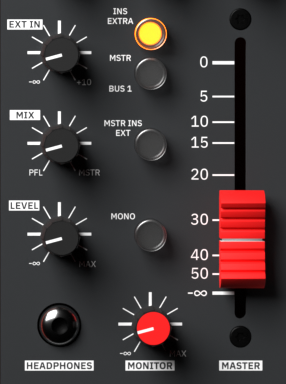

Monitor section

The Monitor Section of the MX Modular is designed for precise control over your outputs and monitoring needs, combining essential functions with intuitive operation.
Red Fader: Master Out Volume
- The red fader controls the volume of the Main Outputs, providing smooth, precise adjustments.
- This level is also visible on the Main VU Meters, giving you clear visual feedback for accurate monitoring.
Rotary Knob: Monitor Output Control
- A dedicated rotary knob allows you to adjust the volume of the separate monitor outputs, independent of the main output.
Headphone Section
The headphone section is equipped with a TRS socket and two dedicated knobs:
- Mix Knob: Balances between the PFL (Pre-Fader Listen) Bus and the Master Bus, offering flexible monitoring options.
- Level Knob: Adjusts the overall headphone volume for comfortable listening.
External In Control
- A separate External In Knob allows you to mix the stereo external input (from the back panel) into the Master Bus. This is useful for integrating external sources directly into your mix.
Additional Buttons
The monitor section also features four buttons with LED indicators for advanced routing and insert control:
- 500 Series Stereo Extra Slot Control:
- Upper Button: Activates the additional 500-series stereo slot (labeled extra slot), making it available for use.
- Lower Button: Determines how the activated slot is used:
- Default (Unlit): The slot is inserted into the Master Channel.
- Lit: The slot is inserted into BUS 1, providing flexibility for signal routing.
- Master Insert Enable:
- The third button activates an external master insert device connected to the dedicated TRS sockets on the back panel. This allows for seamless integration of external mastering processing gear like compressors or EQs.
- Mono Switch:
- The fourth button sums the full mix into Mono, enabling quick checks for mono compatibility and balance.
Summary
The Monitor Section offers extensive control with the following features:
- Red Fader for precise Main Output volume control, visible on the Main VU Meters.
- Rotary Knob for adjusting separate Monitor Outputs.
- Headphone Section with TRS socket, Mix and Level knobs for flexible monitoring.
- External In Knob to mix a stereo external source into the Master Bus.
- Four configurable buttons for:
- Activating and routing the additional 500-series stereo slot.
- Enabling an external master insert device.
- Summing the mix to Mono.
This combination of tools ensures comprehensive monitoring and output control, making it easy to adapt the MX Modular to various studio and live setups.